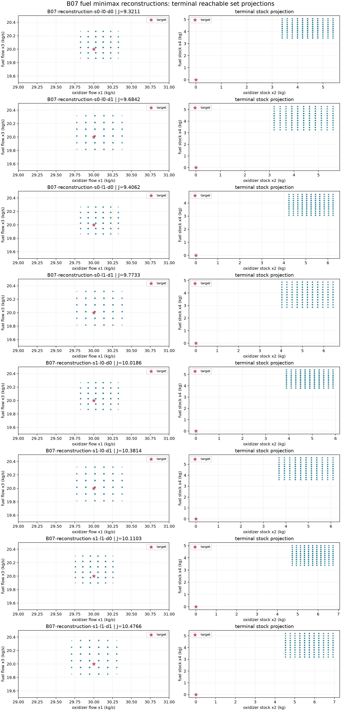

B07 owner-approved fuel reconstruction cases
Status: saved reconstruction evidence; not a historical reproduction. The source article states a 100-second duration and prints initial stocks (302,207). These cases use the owner-approved five 2-second steps (10 seconds) and compare both (305,205) and (302,207). The reported paper values were not used as targets.
All cases enumerate 3,125 fixed plans and four stagewise disturbance corners per step for the continuous box [-1,1]^2. An independent NumPy enumeration checked feasibility, complete minimizing-plan indices, and objective values. Seven measured Release calls follow one excluded warmup per case. Each timing includes request construction and one public minimax call; no speedup or cross-adapter claim is made.
Results
| Case | Initial stocks (kg) | lambda | Disturbance coefficients | Feasible plans | Minimizing plan indices | Worst-case objective | Median (ms) |
|---|---|---|---|---|---|---|---|
| B07-reconstruction-s0-l0-d0 | 305, 205 | 0 | 0.05, -0.04 | 493 | 188 | 9.321090 | 416.384 |
| B07-reconstruction-s0-l0-d1 | 305, 205 | 0 | 0.06, -0.05 | 365 | 188 | 9.684232 | 339.471 |
| B07-reconstruction-s0-l1-d0 | 305, 205 | 1 | 0.05, -0.04 | 493 | 212, 292, 308 | 9.406191 | 413.249 |
| B07-reconstruction-s0-l1-d1 | 305, 205 | 1 | 0.06, -0.05 | 365 | 212, 292, 308 | 9.773334 | 339.482 |
| B07-reconstruction-s1-l0-d0 | 302, 207 | 0 | 0.05, -0.04 | 442 | 1336 | 10.018619 | 396.968 |
| B07-reconstruction-s1-l0-d1 | 302, 207 | 0 | 0.06, -0.05 | 328 | 1336 | 10.381443 | 325.552 |
| B07-reconstruction-s1-l1-d0 | 302, 207 | 1 | 0.05, -0.04 | 442 | 831, 911, 1407 | 10.110308 | 400.027 |
| B07-reconstruction-s1-l1-d1 | 302, 207 | 1 | 0.06, -0.05 | 328 | 831, 911, 1407 | 10.476614 | 327.423 |
Terminal set projections

SVG figure · Raw solver records and terminal vertices · Independent verification · Full assumptions and timing notes · Bundle checksums